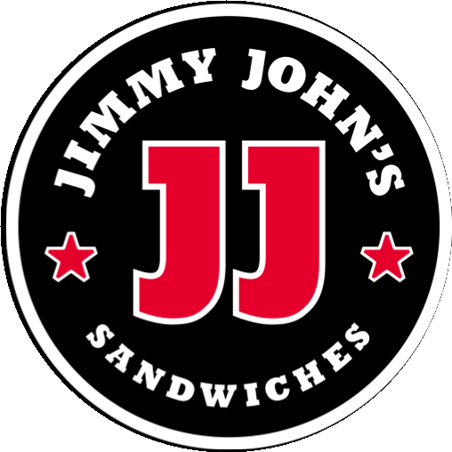

<!doctype html>
<html lang="es">
<head>
<meta charset="utf-8">
<meta name="viewport" content="width=device-width, initial-scale=1, viewport-fit=cover">
<meta name="robots" content="noindex, nofollow">
<meta name="theme-color" content="#000000">
<title>Jimmy John's · ¿Qué tal tu experiencia?</title>
<link rel="preconnect" href="https://fonts.googleapis.com">
<link rel="stylesheet" href="https://fonts.googleapis.com/css2?family=Archivo:wdth,wght@100,500;100,600;100,700;125,800;125,900&family=Oswald:wght@600;700&family=Kaushan+Script&display=swap">
<link rel="stylesheet" href="../css/movil.css?v=11">
<style>
/* Según el Brand Immersion de Jimmy John's: negro, rojo #E4002B y blanco; títulos condensados y anchos
   en mayúsculas, una palabra de acento en caligrafía roja y estrellas como recurso gráfico. */
:root {
  --rojo: #E4002B;
  --fondo: #000000; --hoja: #FFFFFF; --tarjeta: #FFFFFF; --texto: #000000; --texto-suave: #4D4D4D; --titulo: #000000;
  --primario: #E4002B; --sobre-primario: #FFFFFF; --borde: #000000; --sel-fondo: #FFE5EA; --ofertas-fondo: #F4F4F4;
  --cab-fondo: #000000; --cab-texto: #FFFFFF; --progreso-vacio: #4A4A4A;
  --fuente: 'Archivo', system-ui, sans-serif; --fuente-titulo: 'Archivo', system-ui, sans-serif; --fuente-boton: 'Archivo', system-ui, sans-serif;
  --peso-titulo: 900; --mayus: uppercase; --espaciado-titulo: 0; --mayus-boton: uppercase; --espaciado-boton: 0.5px;
  --radio: 0; --radio-chip: 0; --radio-boton: 0; --radio-campo: 0;
}
.cab { padding: 12px 16px; border-bottom: 6px solid var(--rojo); }
.logo img { display: block; width: 66px; height: 66px; }
.progreso span.lleno { background: var(--rojo); }

/* Títulos: línea condensada + línea ancha + acento en caligrafía roja */
h1, h2 { font-stretch: 125%; line-height: 1.02; }
h1 { font-size: 30px; }
h1 .chico, h2 .chico { display: block; margin-bottom: 4px; font-family: 'Oswald', sans-serif; font-stretch: normal; font-weight: 700; font-size: 0.72em; letter-spacing: 0.5px; }
h1 .script, h2 .script { font-family: 'Kaushan Script', cursive; font-stretch: normal; font-weight: 400; text-transform: none; color: var(--rojo); font-size: 1.12em; }
.cuerpo::before { content: '★ ★ ★'; color: var(--rojo); font-size: 18px; letter-spacing: 6px; }

.cara-fila { border: 2px solid #000000; font-weight: 700; }
.cara-fila:active, .cara-fila.tocado { background: var(--rojo); color: #FFFFFF; border-color: var(--rojo); }
.chip { border: 2px solid #000000; font-weight: 700; }
.chip.sel { background: var(--rojo); border-color: var(--rojo); color: #FFFFFF; }
.principal { font-stretch: 125%; font-weight: 900; font-size: 18px; }
.ofertas { border: 2px solid #000000; background: #FFFFFF; }
.ofertas h2 { font-size: 20px; }

/* Gracias en negro, como las piezas de la marca */
.gracias { background: #000000; color: #FFFFFF; }
.gracias::before { color: var(--rojo); }
.gracias h1 { color: #FFFFFF; font-size: 42px; }
.gracias .sub { color: #D9D9D9; }
.gracias .sub b { color: #FFFFFF; }
.sello-grande { width: 150px; height: 150px; }
.tagline { margin-top: 6px; font-family: 'Oswald', sans-serif; font-weight: 700; font-size: 24px; line-height: 1.05; text-transform: uppercase; color: #FFFFFF; }
.tagline span { display: inline-block; margin-top: 4px; padding: 0 6px; background: var(--rojo); }
</style>
</head>
<body>
<div id="app"></div>
<script>
window.MARCA = {
  clave: "Jimmy John's", nombre: "Jimmy John's",
  logo: '',
  imagen: '<div class="tagline">The sandwich of<br><span>sandwiches</span></div>',
  textos: {
    pregunta: '<span class="chico">¿Qué tal fue tu</span>experiencia <span class="script">hoy?</span>',
    positiva: '<span class="chico">¡Buenísimo!</span>¿Qué fue lo <span class="script">mejor?</span>',
    neutra: '<span class="chico">Cuéntanos</span>¿Qué podemos <span class="script">mejorar?</span>',
    negativa: '<span class="chico">Lo sentimos</span>¿Qué <span class="script">falló?</span>',
    ofertas: '<span class="chico">¿Quieres recibir</span><span class="script">ofertas?</span>',
    gracias: '¡Gracias!'
  },
  gusto: ['Sabor del sándwich', 'Ingredientes frescos', 'Rapidez (freaky fast)', 'Pedido correcto', 'Amabilidad del personal', 'Limpieza del local'],
  mejorar: ['Sabor del sándwich', 'Ingredientes poco frescos', 'Demora en la entrega', 'Pedido incorrecto', 'Atención del personal', 'Limpieza del local']
};
</script>
<script src="../js/config.js?v=11"></script>
<script src="../js/politica.js?v=11"></script>
<script src="../js/movil.js?v=12"></script>
</body>
</html>
